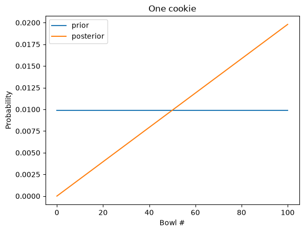
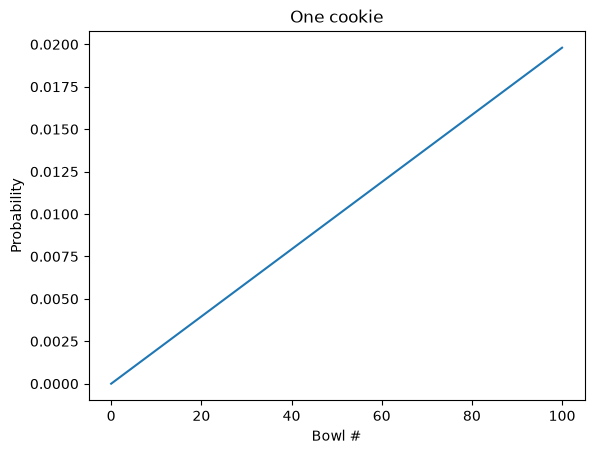
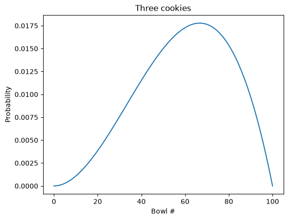

Probability Mass Functions#
This notebook is part of Bite Size Bayes, an introduction to probability and Bayesian statistics using Python.
Click here to run this notebook on Colab. For the exercises, use the version with blanks.
import pandas as pd
import numpy as np
Review#
In the previous notebook we used a Bayes table to interpret medical tests.
In this notebook we’ll solve an expanded version of the cookie problem with 101 Bowls. It might seem like a silly problem, but it’s not: the solution demonstrates a Bayesian way to estimate a proportion, and it applies to lots of real problems that don’t involve cookies.
Then I’ll introduce an alternative to the Bayes table, a probability mass function (PMF), which is a useful way to represent and do computations with distributions.
Here’s the function, from the previous notebook, we’ll use to make Bayes tables:
import pandas as pd
def make_bayes_table(hypos, prior, likelihood):
"""Make a Bayes table.
hypos: sequence of hypotheses
prior: prior probabilities
likelihood: sequence of likelihoods
returns: DataFrame
"""
table = pd.DataFrame(index=hypos)
table['prior'] = prior
table['likelihood'] = likelihood
table['unnorm'] = table['prior'] * table['likelihood']
prob_data = table['unnorm'].sum()
table['posterior'] = table['unnorm'] / prob_data
return table
101 Bowls#
In Notebook 4, we saw that the Bayes table works with more than two hypotheses. As an example, we solved a cookie problem with five bowls.
Now we’ll take it even farther and solve a cookie problem with 101 bowls:
Bowl 0 contains no vanilla cookies,
Bowl 1 contains 1% vanilla cookies,
Bowl 2 contains 2% vanilla cookies,
and so on, up to
Bowl 99 contains 99% vanilla cookies, and
Bowl 100 contains all vanilla cookies.
As in the previous problems, there are only two kinds of cookies, vanilla and chocolate. So Bowl 0 is all chocolate cookies, Bowl 1 is 99% chocolate, and so on.
Suppose we choose a bowl at random, choose a cookie at random, and it turns out to be vanilla. What is the probability that the cookie came from Bowl \(x\), for each value of \(x\)?
To solve this problem, I’ll use np.arange to represent 101 hypotheses, numbered from 0 to 100.
import numpy as np
xs = np.arange(101)
The prior probability for each bowl is \(1/101\). I could create a sequence with 101 identical values, but if all of the priors are equal, we only have to probide one value:
prior = 1/101
Because of the way I numbered the bowls, the probability of a vanilla cookie from Bowl \(x\) is \(x/100\). So we can compute the likelihoods like this:
likelihood = xs/100
And that’s all we need; the Bayes table does the rest:
table = make_bayes_table(xs, prior, likelihood)
Here’s a feature we have not seen before: we can give the index of the Bayes table a name, which will appear when we display the table.
table.index.name = 'Bowl'
Here are the first few rows:
table.head()
| prior | likelihood | unnorm | posterior | |
|---|---|---|---|---|
| Bowl | ||||
| 0 | 0.009901 | 0.00 | 0.000000 | 0.000000 |
| 1 | 0.009901 | 0.01 | 0.000099 | 0.000198 |
| 2 | 0.009901 | 0.02 | 0.000198 | 0.000396 |
| 3 | 0.009901 | 0.03 | 0.000297 | 0.000594 |
| 4 | 0.009901 | 0.04 | 0.000396 | 0.000792 |
Because Bowl 0 contains no vanilla cookies, its likelihood is 0, so its posterior probability is 0. That is, the cookie cannot have come from Bowl 0.
Here are the last few rows of the table.
table.tail()
| prior | likelihood | unnorm | posterior | |
|---|---|---|---|---|
| Bowl | ||||
| 96 | 0.009901 | 0.96 | 0.009505 | 0.019010 |
| 97 | 0.009901 | 0.97 | 0.009604 | 0.019208 |
| 98 | 0.009901 | 0.98 | 0.009703 | 0.019406 |
| 99 | 0.009901 | 0.99 | 0.009802 | 0.019604 |
| 100 | 0.009901 | 1.00 | 0.009901 | 0.019802 |
The posterior probabilities are substantially higher for the high-numbered bowls.
There is a pattern here that will be clearer if we plot the results.
import matplotlib.pyplot as plt
def plot_table(table):
"""Plot results from the 101 Bowls problem.
table: DataFrame representing a Bayes table
"""
table['prior'].plot()
table['posterior'].plot()
plt.xlabel('Bowl #')
plt.ylabel('Probability')
plt.legend()
plot_table(table)
plt.title('One cookie');

The prior probabilities are uniform; that is, they are the same for every bowl.
The posterior probabilities increase linearly; Bowl 0 is the least likely (actually impossible), and Bowl 100 is the most likely.
Probability Mass Functions#
When we do more than one update, we don’t always want to keep the whole Bayes table. In this section we’ll replace the Bayes table with a more compact representation, a probability mass function, or PMF.
A PMF is a set of possible outcomes and their corresponding probabilities. There are many ways to represent a PMF; in this notebook I’ll use a Pandas Series.
Here’s a function that takes a sequence of outcomes, xs, and a sequence of probabilities, ps, and returns a Pandas Series that represents a PMF.
def make_pmf(xs, ps, **options):
"""Make a Series that represents a PMF.
xs: sequence of values
ps: sequence of probabilities
options: keyword arguments passed to Series constructor
returns: Pandas Series
"""
pmf = pd.Series(ps, index=xs, **options)
return pmf
And here’s a PMF that represents the prior from the 101 Bowls problem.
xs = np.arange(101)
prior = 1/101
pmf = make_pmf(xs, prior)
pmf.head()
0 0.009901
1 0.009901
2 0.009901
3 0.009901
4 0.009901
dtype: float64
Now that we have a prior, we need to compute likelihoods.
Here are the likelihoods for a vanilla cookie:
likelihood_vanilla = xs / 100
And for a chocolate cookie.
likelihood_chocolate = 1 - xs / 100
To compute posterior probabilities, I’ll use the following function, which takes a PMF and a sequence of likelihoods, and updates the PMF:
def bayes_update(pmf, likelihood):
"""Do a Bayesian update.
pmf: Series that represents the prior
likelihood: sequence of likelihoods
"""
pmf *= likelihood
pmf /= pmf.sum()
The steps here are the same as in the Bayes table:
Multiply the prior by the likelihoods.
Add up the products to get the total probability of the data.
Divide through to normalize the posteriors.
Now we can do the update for a vanilla cookie.
bayes_update(pmf, likelihood_vanilla)
Here’s what the PMF looks like after the update.
pmf.plot()
plt.xlabel('Bowl #')
plt.ylabel('Probability')
plt.title('One cookie');

That’s consistent with what we got with the Bayes table.
The advantage of using a PMF is that it is easier to do multiple updates. The following cell starts again with the uniform prior and does updates with two vanilla cookies and one chocolate cookie:
data = 'VVC'
pmf = make_pmf(xs, prior)
for cookie in data:
if cookie == 'V':
bayes_update(pmf, likelihood_vanilla)
else:
bayes_update(pmf, likelihood_chocolate)
Here’s what the results look like:
pmf.plot()
plt.xlabel('Bowl #')
plt.ylabel('Probability')
plt.title('Three cookies');

Again, that’s consistent with what we got with the Bayes table.
In the next section, I’ll use a PMF and bayes_update to solve a dice problem.
The dice problem#
As an exercise, let’s do one more version of the dice problem:
Suppose you have a 4-sided, 6-sided, 8-sided, 12-sided, and a 20-sided die. You choose one at random, roll it and get a 7. What is the probability that the die you rolled is 4-sided? What are the posterior probabilities for the other dice?
Notice that in this version I’ve added a 20-sided die and the outcome is 7, not 1.
Here’s a PMF that represents the prior:
sides = np.array([4, 6, 8, 12, 20])
prior = 1/5
pmf = make_pmf(sides, prior)
pmf
4 0.2
6 0.2
8 0.2
12 0.2
20 0.2
dtype: float64
In this version, the hypotheses are integers rather than strings, so we can compute the likelihoods like this:
likelihood = 1 / sides
But the outcome is 7, so any die with fewer than 7 sides has likelihood 0.
We can adjust likelihood by making a Boolean Series:
too_low = (sides < 7)
And using it to set the corresponding elements of likelihood to 0.
likelihood[too_low] = 0
likelihood
array([0. , 0. , 0.125 , 0.08333333, 0.05 ])
Now we can do the update and display the results.
bayes_update(pmf, likelihood)
pmf
4 0.000000
6 0.000000
8 0.483871
12 0.322581
20 0.193548
dtype: float64
The 4-sided and 6-sided dice have been eliminated. Of the remaining dice, the 8-sided die is the most likely.
Exercise: Suppose you have the same set of 5 die. You choose a die, roll it six times, and get 6, 7, 2, 5, 1, and 2 again. Use idxmax to find the MAP. What is the posterior probability of the MAP?
# Solution
sides = np.array([4, 6, 8, 12, 20])
prior = 1/5
pmf = make_pmf(sides, prior)
# Solution
outcomes = [6, 7, 2, 5, 1, 2]
for outcome in outcomes:
likelihood = 1 / sides
too_low = (sides < outcome)
likelihood[too_low] = 0
bayes_update(pmf, likelihood)
pmf
4 0.000000
6 0.000000
8 0.915845
12 0.080403
20 0.003751
dtype: float64
# Solution
MAP = pmf.idxmax()
MAP
np.int64(8)
# Solution
pmf[MAP]
np.float64(0.91584527196901)
Summary#
In this notebook, we extended the cookie problem with more bowls and the dice problem with more dice.
I defined the MAP, which is the quantity in a posterior distribution with the highest probability.
Although the cookie problem is not particularly realistic or useful, the method we used to solve it applies to many problems in the real world where we want to estimate a proportion.
In the next notebook we’ll use the same method on a related problem, and take another step toward doing Bayesian statistics.
Copyright 2020–2026 Allen Downey
Code license: MIT License
Text license: CC BY-NC-SA 4.0